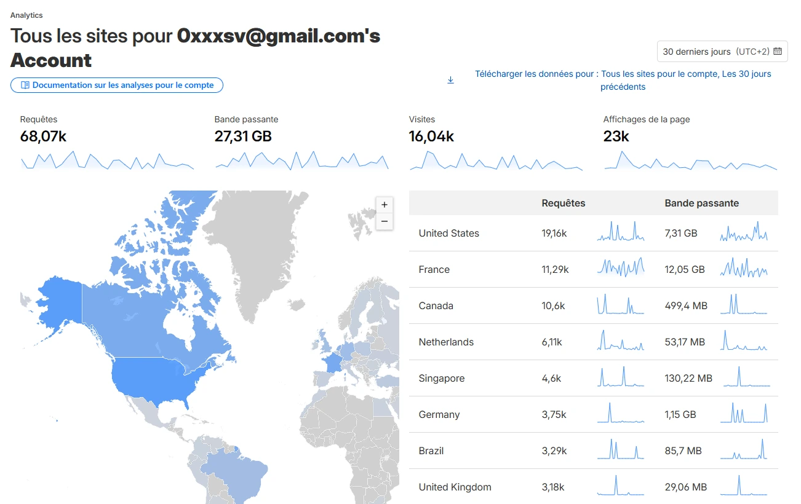
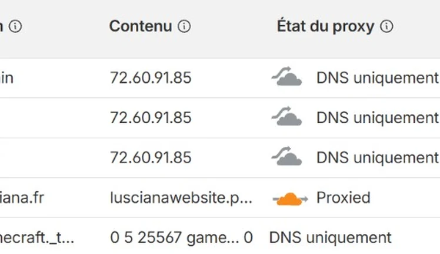

Build & development · Projet phare
Lusciana.fr
Vitrine et boutique pour une société de développement : présenter l’activité, structurer l’offre et ancrer la marque sur le web avec une stack maîtrisée de bout en bout.
01 — Identité
Une vitrine qui porte la marque
Lusciana est une entreprise de build & development. Le site traduit une posture professionnelle, rassure les visiteurs et ouvre la voie vers la boutique ou les prises de contact — avec une direction visuelle lisible sur mobile comme sur desktop.

02 — Expérience
Boutique en ligne : fiches produits, paiement sécurisé et parcours d’achat clair.
03 — Livrables
Ce que le projet démontre
- SEO Structure sémantique, titres, performances de base et indexation.
- Analytics Lecture du trafic, bande passante et visites via les tableaux de bord.
- DNS Apex, sous-domaines applicatifs et routage vers le VPS.
- Hébergement Déploiement sur serveur dédié, cohabitation avec l’écosystème interne.
04 — Performance
Suivi du trafic
Cloudflare Analytics : visiteurs uniques, tendances sur 30 jours et indicateurs pour ajuster cache, DNS et charge serveur.

05 — Compte
Mesurer pour piloter
Vue globale du compte Cloudflare : requêtes, bande passante et tendances. Ces indicateurs guident les arbitrages (cache, DNS, charge serveur).

06 — Infrastructure
Du domaine au serveur
Les enregistrements DNS relient le nom de domaine au VPS : apex public,
sous-domaines pour les applications (dont admin), proxy ou DNS only selon les besoins.

07 — Suite logique
Vitrine publique, back-office séparé
Le site client vit sur lusciana.fr. La gestion interne (agents, commissions, tâches) est isolée sur admin.lusciana.fr — Docker, MongoDB et API dédiée.
Découvrir le CRM